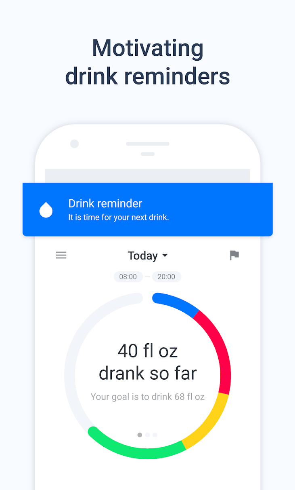
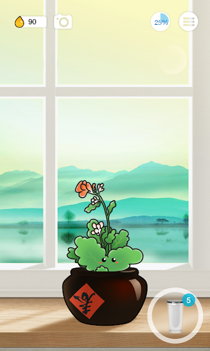
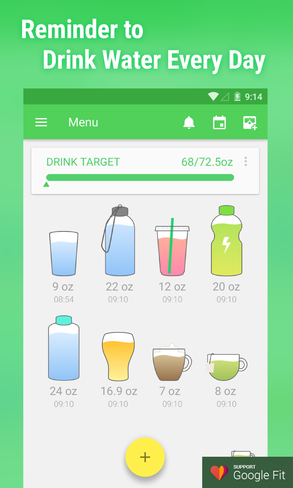
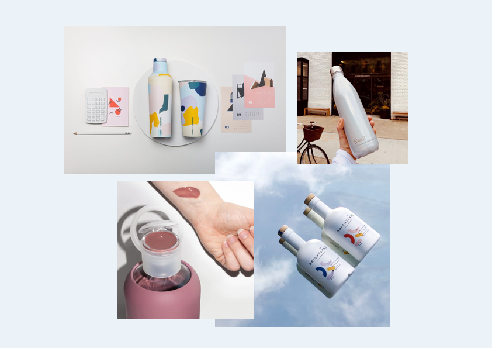
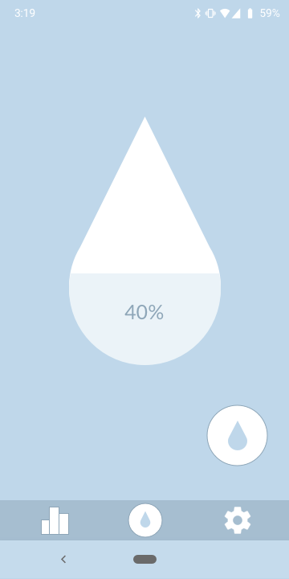
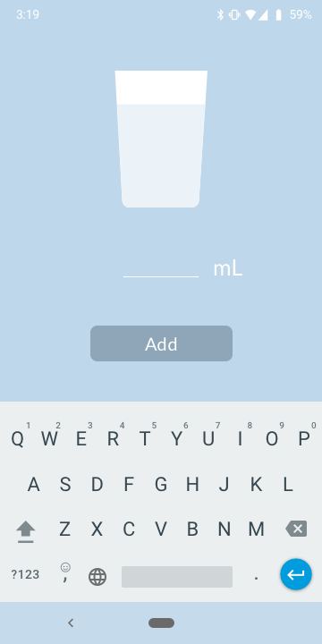
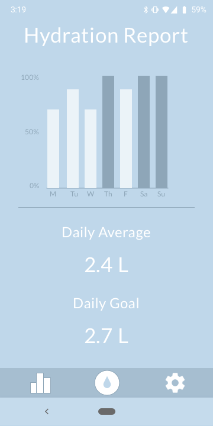

Flow: Water tracking app for Android

Problem
Everyone knows they should be drinking more water. Sleek water bottles from brands like S’well, Hydro Flask, and Corkcicle have become status symbols. In the world of wellness, fitness trackers have also become popular with products like Fitbit and the Apple Watch encouraging users to monitor aspects of their health such as footsteps and heartbeat. A water tracker allows users to monitor their water consumption and meet their health goals.



Research
On the Google Play Store, the top three apps I found were Hydro Coach, Plant Nanny, and Water Drink Reminder. Their visual identities were either playful or clinical. There was nothing that matched the sleekness of fancy water bottles or health wearables. For an app to appeal to users, it must match their aesthetic tastes. I chose to design Flow, a water tracking app that balanced substance and style.
Design

I took inspiration from three water bottle companies that are style-focused, as well as an olive oil company with a unique visual identity. I wanted to provide a style update that water bottles had received to the water trackers that accompany them. A minimalist art style using neutral pastels and geometric symbols would reflect the simple nature of the app and its core theme of water.
Flow was designed in Sketch after many paper sketches. The design process was iterative, with consultation from friends informing usability and visual design. It is designed for Android, the OS for 75% of the world’s mobile users.



Reflection
Flow was a project that challenged me to refine my UI design skills while balancing user needs. Creating a product that was simple, elegant and effective required research, restraint, and lots of revision.
Thank you for reading!